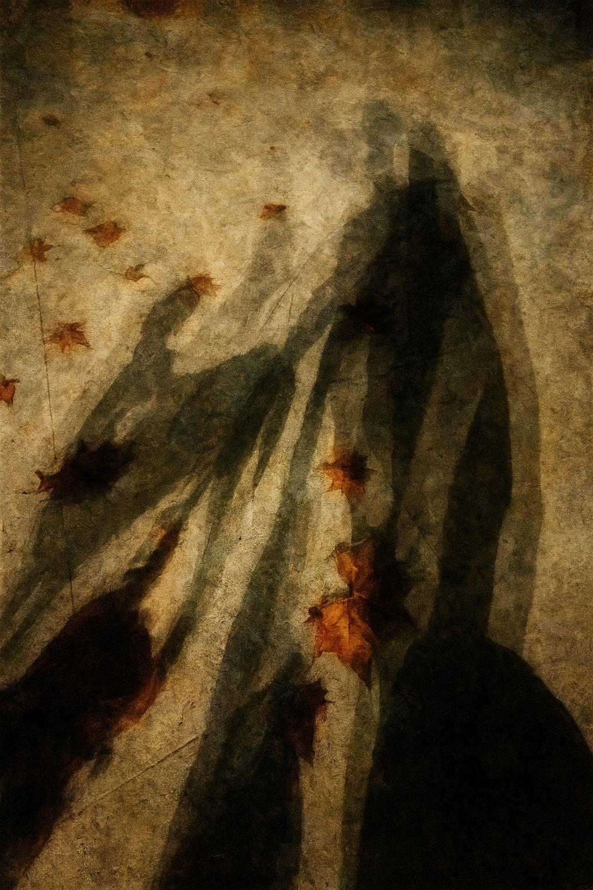

Deriva sobre la persona
Roma, puentes y sombras
Muy loco que en este momento estemos participando de algo que no es del todo nuestro… En realidad yo no, pero Angie sí, Angie leyendo manos en una película que habla de la persona, de todas las personas que somos, de todos los personajes que habitamos simultáneamente, y yo caminando, medio a un lado, medio dentro, escuchando el Tévere que corre como un pensamiento líquido, que murmura cosas que se pierden en la piedra y en las hojas.
Susana hablando de su film y yo escuchando cómo la poeta transforma su propia voz, y cómo Angie, leyendo sus manos, abre algo que no se ve, algo que vibra detrás de la piel y los gestos. Cuántas personas conviven en la misma persona, cuántas voces esperan su turno mientras la ciudad no deja de hablar, mientras Roma respira y nosotros flotamos entre piedras, luces, sombras.
El Ponte Fabricio sostiene el tiempo, los pasos, los silencios. Más allá, el Ponte Rotto, fragmentado, suspendido, un puente que ya no une, un puente que dice sin palabras que algunas rutas se quiebran pero no desaparecen. La ruina, la continuidad de lo roto, mi sombra proyectándose sobre las piedras húmedas, y siento que por un segundo el puente se completa, y no sé si soy yo o la sombra o el puente el que sostiene a quién.

El olor de los plátanos en otoño sube desde la acera, mezcla de hoja húmeda y hoja que se pudre, aroma que recuerda lo que se disuelve y lo que permanece, y me hace pensar que la persona también huele así: a capas, a memoria, a lo que queda y lo que se transforma. Entre ramas, luces y sombras, las paredes grises cobran formas que no pertenecen del todo al presente, ecos de antiguos pasos, presencias antiguas, sombras de otros que alguna vez pasaron por aquí y ahora regresan en líneas que apenas se perciben.
La persona es máscara y membrana, dice la voz que resuena a través de todo esto. Per-sonare. Lo que pasa, lo que vibra, lo que atraviesa el cuerpo sin permiso. Y pienso en la poeta, en las manos que Angie lee, en cuántas capas de uno mismo conviven y cómo algunas solo se dejan ver en el umbral, en los espacios liminales, en los puentes rotos, en la bruma húmeda que se respira entre los arcos y las piedras.
Y entonces derivo: de Ponte Rotto a Ponte Fabricio, de las luces que caen sobre los árboles a las luces que atraviesan las sombras de mis propios pasos, de la ciudad que ruge a la ciudad que murmura. Y pienso que la persona no es unidad, no es línea recta, no es un puente entero. Es ruina que se sostiene, es sombra que proyecta otra sombra, es río que arrastra hojas, autos, voces, recuerdos.
Los autos, las motos, la ambulancia que corta la noche: ruido, fondo, pulso. Y yo escucho y me siento parte de ese fondo y a la vez algo que emerge de él, como si la identidad misma fuera una línea que se dobla, que se fractura, que se expande y se contrae, un puente invisible que atraviesa la memoria, el tiempo, la luz, la sombra.
Y vuelvo a la pregunta inicial: la persona, ¿quién es? ¿Quién está detrás de la persona? ¿Quién camina detrás de la sombra que proyecta? Tal vez la persona es solo el umbral que habitamos, el paso entre lo que somos y lo que nos atraviesa, entre la ruina y la luz, entre el río y las piedras, entre la máscara y lo que resuena a través de ella.
Y mientras camino, el Tévere murmura otra vez, las hojas caen, las sombras se desdoblan, y pienso que la ciudad entera conspira para recordarnos que nada es lineal, que todo se superpone, que somos multiplicidad que se cruza con multiplicidad, que somos puente roto y puente intacto al mismo tiempo, que la persona nunca termina de decir quién es.